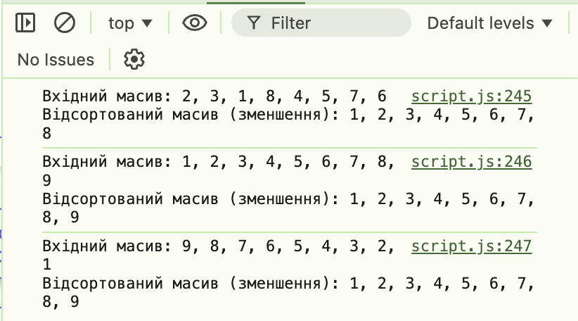

function generateArray() {
//Отримуємо і перевіряємо введене значення
const size = getSize();
console.log(size);
if (!size) {
return;
}
// Генеруємо масив випадкових чисел
const array = [];
for (let i = 0; i < size; i++) {
const val = Math.floor(Math.random() * (100 - 0 + 1)) + 0;
array.push(val);
}
return array;
}
function getSize() {
let size = parseInt(window.prompt('Enter number of elements in array'));
if (isNaN(size) || size <= 0) {
const isEnter = window.confirm('Enter correct number of elements in array. Do you want to try again?');
if (isEnter) {
return getSize();
} else {
return;
}
}
console.log(parseInt(size));
return size;
}
function findMinAndMaxValues(array) {
// Розділяємо елементи на парні та непарні індекси
const evenIndices = array.filter((_, index) => index % 2 === 0);
const oddIndices = array.filter((_, index) => index % 2 !== 0);
// Знаходимо максимум та мінімум
const evenMax = Math.max(...evenIndices);
const evenMin = Math.min(...evenIndices);
const oddMax = Math.max(...oddIndices);
const oddMin = Math.min(...oddIndices);
// Виводимо результати
window.alert(`
Масив: ${array.join(', ')}
Максимальне (парні індекси): ${evenMax}
Мінімальне (парні індекси): ${evenMin}
Максимальне (непарні індекси): ${oddMax}
Мінімальне (непарні індекси): ${oddMin}
`);
}
function start() {
const array = generateArray();
if (!array) {
return;
}
findMinAndMaxValues(array);
}
function sortArray(arr) {
const originalArray = [...arr];
for (let i = 0, l = arr.length, k = l - 1; i < k; i++) {
let indexMin = i;
for (let j = i + 1; j < l; j++) {
if (arr[indexMin] > arr[j]) {
indexMin = j;
}
}
if (indexMin !== i) {
[arr[i], arr[indexMin]] = [arr[indexMin], arr[i]];
}
}
return `Вхідний масив: ${originalArray.join(', ')}
Відсортований масив (зменшення): ${arr.join(', ')}`;
}
console.log(sortArray([2, 3, 1, 8, 4, 5, 7, 6]));
console.log(sortArray([1, 2, 3, 4, 5, 6, 7, 8, 9]));
console.log(sortArray([98, 86, 7, 6, 5, 4, 3, 21, 1, 11, 33, 2, 51, 9, 8]));
